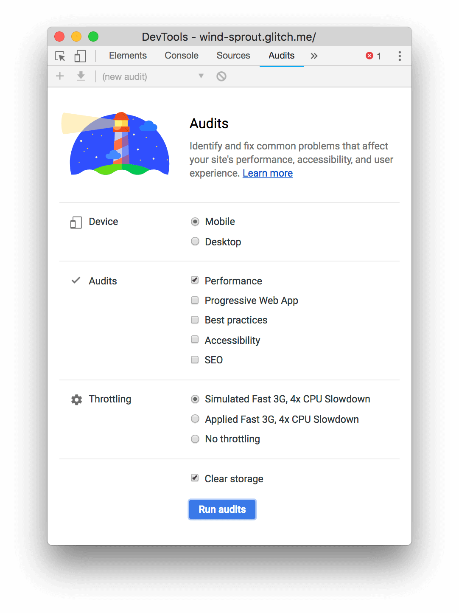

本文总结 chrome 开发者工具的使用，重点介绍性能优化方面的工具。
官方文档参考：https://developers.google.com/web/tools/chrome-devtools/?hl=en。
使用 Chrome DevTools 中的 Coverage 标签查找未使用的 JavaScript 和 CSS 代码
https://developers.google.com/web/tools/chrome-devtools/coverage/
NetWork
如果您正在寻找提高页面加载性能的方法，不要从 Network 面板开始。有许多类型的负载性能问题与网络活动无关。从审计 Audits 小组开始，因为它给你有针对性的建议如何改善你的页面。参见 优化网站速度。
Timing 标签：
Queueing。浏览器会在以下情况下将某个请求排队：
- 有更高优先级的请求
- 在http1.0/1.1协议下，chrome对于同一域名下的并发请求数（连接数）限制为6个。
- 浏览器正在硬盘的缓存上分配空间
Stalled。请求会因为各种原因的排队被拖延，与请求队列有关系。
DNS Lookup。DNS查询。
Proxy negotiation。浏览器正在与代理服务器协商请求（建立TCP连接的时间）。
Request sent。正在发送请求。
- ServiceWorker Preparation。浏览器正在启动Service Worker。
- Request to ServiceWorker。正在将请求发送到Service Worker。
- Waiting (TTFB)。浏览器正在等待响应的第一个字节。TTFB表示Time To First Byte（至第一字节的时间）。此时间包括1次往返延迟时间及服务器准备响应所用的时间。
- Content Download。浏览器正在接收响应。
- Receiving Push。浏览器正在通过 HTTP/2 服务器推送接收此响应的数据。
- Reading Push。浏览器正在读取之前收到的本地数据。
对于某个请求我们能够优化的主要是
Waiting (TTFB)。它耗费的时间最多。主要从服务器响应和网络传输这两方面来下手。如果只考虑网络传输这个因素，那么压缩传输数据，毕竟网络速度有限，减少传送的数据字节数可以加快传输速度。
Performance panel
开始
示例网址：https://googlechrome.github.io/devtools-samples/jank/
分析帧率(FPS)
- 红色表示帧率比较差，影响用户体验。绿色越高，表示帧率越好。

- 在 FPS 下方是 CPU 图。CPU 中的颜色对应 Summary 标签颜色，CPU 图表充满色彩意味着在记录过程中 CPU 已被用尽。每当您看到 CPU 长时间处于满负荷状态时，就可以找到减少工作量的方法。
- 在 Frames 部分将鼠标移到绿色方块上显示此时的帧率。

- 另一个分析帧率的方法 FPS meter。
1 | 1. Command+Shift+P |
发现瓶颈
看 Summary 面板，看耗时最长哪个。
展开 Main 面板。DevTools 向您显示了主线程随时间变化的活动图表。x轴表示一段时间内的记录。每个条形代表一个事件。较宽的条形表示事件花费了更长的时间。y轴表示调用堆栈。当您看到事件相互叠加时，表示上层的事件触发下层的事件。

请注意 Animation Frame Fired 事件右上角的红色三角形。每当您看到红色三角形时，表示警告此事件有问题。
点击 Main 上某个事件，在 Summary 面板可以定位到触发事件的代码，点击进入代码文件，可以定位到代码行。
下一步
了解性能的基础是 RAIL 模型。此模型教您对用户最重要的性能指标。请参阅使用 RAIL 模型评估性能以了解更多信息。
为了使您对 Performance 面板更加满意，练习是完美的。尝试对自己的页面进行概要分析并分析结果。
要真正掌握运行时性能，您必须了解浏览器如何将HTML，CSS和JS转换为屏幕上的像素。最好的起点是渲染性能概述。框架解剖学深入探讨了更多细节
“渲染性能”系列的其余部分提供了许多改善运行时性能各个方面的好技巧，例如：
- 优化JS执行
- 减少样式计算的范围和复杂性
- 避免大型，复杂的布局(Layout)和布局限制
- 简化绘制(Paint)复杂性并减少绘制面积
- 坚持纯合成器(Compositor-Only)属性并管理层数(Layer Count)
- 输入防抖(Debounce)
使用 Chrome 开发工具优化网站速度
Audits(审计) 标签。

分析运行时性能
- 不要编写强制浏览器重新计算布局的 JavaScript。分开读取和写入功能，并首先执行读取。
- 不要使 CSS 过于复杂。使用更少的 CSS，并使 CSS 选择器保持简单。
- 尽可能避免布局。选择完全不触发布局的CSS。
- 绘画可以比其他任何渲染活动花费更多的时间。提防绘制瓶颈。
JavaScript
JavaScript 计算，尤其是那些引发广泛视觉变化的计算，可能会使应用程序性能停滞不前。不要让时机不好或运行时间长的 JavaScript 干扰用户交互。
下表描述了一些常见的 JavaScript 问题和潜在的解决方案：
| 问题 | 示例 | 解决方案 |
|---|---|---|
| 昂贵的输入处理程序会影响响应或动画。 | 触摸，视差滚动。 | 让浏览器处理触摸和滚动，或尽可能晚地绑定侦听器(请参阅Paul Lewis的运行时性能清单中的昂贵的输入处理程序)。 |
| 时机不对的 JavaScript 会影响响应，动画和负载。 | 用户在页面加载 setTimeout / setInterval 后立即滚动。 | 使用 requestAnimationFrame，使用 Web Workers。 |
| 长时间运行的 JavaScript 会影响响应。 | DOMContentLoaded 事件由于被 JS 占用而停滞。 | 将纯计算工作移至 Web Workers。如果需要 DOM 访问，请使用requestAnimationFrame |
| 影响响应或动画的垃圾回收。 | 垃圾回收可以发生在任何地方。 | 写更少的垃圾脚本(请参阅Paul Lewis的运行时性能清单中的动画中的垃圾回收)。 |
Style
样式更改的成本很高，尤其是如果这些更改影响 DOM 中的多个元素时。任何时候将样式应用于元素时，浏览器都必须弄清楚对所有相关元素的影响，重新计算布局并重新绘制。
相关指南：
要减少“重新计算样式”事件的影响，请执行以下操作：
使用 CSS触发器 可了解哪些 CSS 属性可触发布局，绘画和合成。这些属性对渲染性能的影响最大。
切换到影响较小的属性。有关更多指导，请参见 坚持纯合成器(Compositor-Only)属性并管理层数(Layer Count)。
下表描述了一些常见的样式问题和潜在的解决方案：
| 问题 | 示例 | 解决方案 |
|---|---|---|
| 昂贵的样式计算会影响响应或动画。 | 更改元素几何形状（例如元素的 width，height 或 position）的任何 CSS 属性；浏览器必须检查所有其他元素并重做布局。 | 避免使用CSS触发布局 |
| 影响响应或动画的复杂选择器。 | 嵌套选择器强制浏览器了解所有其他元素的所有信息，包括父母和孩子。 | 仅使用类引用CSS中的元素 |